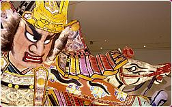
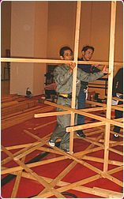
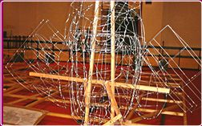
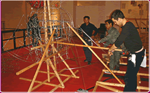
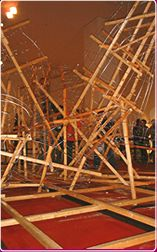
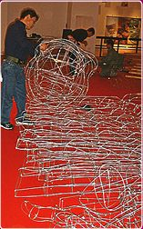
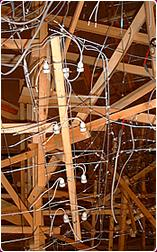
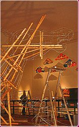

|
Archive from November 2001 The
themes illustrated in the floats paraded in the Nebuta Festival
are taken from historical, religious and folk tales, but also contain
visual puns referring to current events. The nebuta made
by Takashi Kitamura for The British Museum in 2001 is entitled ‘Minamoto
no Yoshitsune crossing the Tsugaru Straits'. Minamoto no Yoshitsune
was a 12th century warrior whose popularity and success as a military
leader posed a threat to his brother, Minamoto no Yoritomo, who
had him killed. He became the tragic hero of many tales, including
one in which he survives and flees Japan over the seas with the
help of his powerful horse. This is the scene depicted on the
nebuta and parallels the voyage of the Nebuta Team crossing
the seas to the UK to construct the festival float in The British
Museum. The painting illustrates the theme and the design which
Kitamura will follow in the construction of the float at The British
Museum. Such paintings form the visual basis from which the artists
elaborate the three-dimensional giant form of the nebuta itself.
They also announce the artistic programme for the festival in Aomori
each year.
|
 |
|
Week 1 Wednesday 14 November 2001 Before the Wellcome Trust Gallery opened to the public at 9am, the last of the materials and equipment was carried through to the exhibition space and construction of the nebuta began. The first step consisted in building a wooden grid to which the wooden inner structure of the nebuta will be fixed. Measuring 7000mm x 5600mm, it took most of the morning to make with Takashi and Akira Kitamura and Maximilian Marshall working together to cut, place and secure the pieces of wood while Maki Fujiwara assisted in organising the work space. The grid was made by lunchtime and the steel girders placed underneath it in preparation for lifting the completed nebuta on 16 December. Some details of the wire structure of the nebuta were made in advance in Japan and shipped to the UK in time for the start of the exhibition. Heads and hands in particular require more time to create: lying on the floor around the grid, one can also make out the shapes of the horse's hoofs, lotus buds and splashes of water. After lunch, Takashi Kitamura focused on the head of the warrior Minamoto no Yoshitsune: the wire part making the head was made to stand by inserting and fixing a number of wooden batons. Once stable, the head was positioned on the floor at the front of the display area so that the artists could work on it. Takashi Kitamura attached the helmet to the top of the head while Akira Kitamura and Maximilian Marshall then outlined and shaped the back of the helmet. Once the wire frame of the head was finished, complete with its helmet, the inner wooden structure which helped stabilise it was taken out and one simple long piece of wood inserted so that it could be raised and positioned on the float itself. All three men wear a tool belt round their waist from which hammer, screws and staples are extracted as needed. The wire itself is attached by means of cotton thread that is wound round the wire and held in place with PVA glue. Strands of cotton thread ready cut to size and the small lidded box containing the glue are attached to the belt. |
 |
|
Thursday 15 November 2001 The head that had been raised yesterday was still standing but the structure on which it rested needed strengthening so that it could also sustain the weight of the arms and body of the warrior represented. Before the right arm was raised, a long sword was attached to the hand: the wire form had been made in advance, and now a long wooden plank was inserted. This will serve to strengthen it, but also provide the inner structure to which the lights will be attached. Positioning of the hand and the angle of the sword was determined by Takashi Kitamura as he stepped back, looked at his preparatory sketch and directed other members of the team. He explained how the size of the head is what will determine the proportions of other details of the float: the height of the body and the width of the shoulders in particular. He also stressed that the figure would not have a separated neck, both for practical reasons and to emphasise its fierce look. As the day progressed, the body was shaped with long pieces of wire extending down from the neck area to the grid base and then with further lengths of wire placed horizontally to create shoulders and chest.
|
 |
|
Friday 16 November 2001 The other arm went up today and the team increasingly needs to be able to work at height. Until now, much of the work to fix the wire parts and extend the wire cover could be made by climbing inside the wooden structure itself. Now, parts of the armour of Minamoto no Yoshitsune required access from the outside of the structure. Scaffolding companies came and went and it gradually emerged that the flexibility of movement required could only be achieved by means of ladders and boards strategically placed. Now that the basic form of body, head and arms was in place, the work concentrated on positioning the parts, strengthening the attachements where they were joined together and finalising the wire form. Soon, the warrior also had its two legs, the right one bent at the knee with the left leg extended to the side. Visitors were now beginning to make out the shape, guessing at the fierce pose of the warrior frozen in mid-air with his sword extended. A number of visitors were beginning to comment on the tools used by the team: a Canadian cabin builder and a British architectural engineer had already come up to observe and point out how 'Japanese saws cut on the pull' and not when the blade is pushed down as with saws available in Europe and north America. |
 |
|
Saturday 17 November 2001 The work is concentrated and the team has settled into silent, efficient and rapid cooperation. Hardly a word passes between the three artists as they work together on the nebuta. Most of the day was spent strengthening the structure of the warrior and taking out excess wood that until then was helping hold up some of the parts. Also removed were those screws that held the figure attached to the wooden grid base. Once seen to be complete with details of the armour attached to the shoulders and the waist, the entire structure was then moved on the grid. Takashi Kitamura stood back and lead the operation, directing turning the figure clockwise so that its face would have a stronger impact on visitors facing the nebuta and moving it closer to the centre so that it can be seen to emerge from the seas and closer to the horse which were yet to come. In the late afternoon, Mr and Mrs Funahashi arrived. They are the members of the Nebuta Team in charge of electrical matters and their work will consist in placing and installing the light-bulbs and circuits. Having landed in London that afternoon, they came to the Museum to see the exhibition space and assess progress of the work.
|

|
|
Sunday 18 November 2001 Akira Kitamura and Maximilian Marshall worked on the hilt of the sword to strengthen it while Takashi Kitamura picked up the horse's head and thought about its placement. Unlike the head of the warrior which was first worked at floor level, the wooden structure inserted in the horse's head was immediately used to raise it. Its positioning also took longer than for the warrior's head, Takashi Kitamura ensuring that the dynamic slant would suggest a horse emerging from the waves. After lunch, all three concentrated on making the horse's wings and this seemed to attract far more attention from visitors than other stages had so far. They worked on the floor near the front of the barriers: first an outline was made of wire, this was then chalked onto the floor to ensure the second wing would be similar in size and shape to the first. The outline of wire is then filled with two cross-pieces of wire, still laid flat on the floor. The three-dimensional form gradually emerges as further lengths of wire are shaped and tied to the basic wire structure thus created. |
 |
|
Monday 19 November 2001 This is the day the electrical wiring begins. Bundles of light sockets are brought to the exhibition space, each socket ready prepared with a piece of wire wound round the head to attach it to the nebuta's structure and short lengths of cable dangling down. Mr Funahashi spends long moments looking at the wire forms to assess the placement of the light bulbs. Work started on the figure's left hand, moving up the arm from the fingers. Meanwhile, Takashi and Akira Kitamura and Maximilian Marshall are concentrating on the horse. The angle of the head needs adjusting and the neck and part of the back is still to be formed with wire. As with the human figure, the wooden structure is created first, in this case towering up the length of the horse's neck. Then the horse's front legs were attached, long pieces of wood extending as far as the hoof where the leg is straight, and a more elaborate wooden structure creating the bend in the right leg. From the head, lengths of wire are extended vertically while circles of wire of increasing size are attached to them to gradually form the neck. Finally, the two wings that were made yesterday were raised. Over three metres long, everyone joined in to hold them up while Takashi Kitamura decided on their angle. By this time, Katsutoshi Funahashi is working on putting lights in the head of the figure while his wife secures those he has placed in the arm.
|
 |
|
Tuesday 20 November 2001 The day started with a trip to a hardware shop to buy some step ladders. Waiting to find out how many were available in stock, Mr Kitamura spent time looking at the tools and materials comparing them with what is available in Japan. Tape measures with inches and feet marked on it were one of the more curious items, possible souvenirs from their trip to the UK. Work on the nebuta now focuses on the details of the shapes: the horse is given ears and some of its trappings, the figure now holds a bridle. Visitors are beginning to find it difficult to make out the shape. The nebuta appears to be a jumble of wood against which the wire forms are hardly visible at a distance. One person described the cables hanging out as 'spaghetti'! But several are beginning to return, monitoring progress of the construction as they walk through the Museum on a regular basis. |
 |
|
Wednesday 21 November 2001 Today, water is beginning to rise from the grid. Just as the wings of the horse were outlined on the floor, so the waves are shaped in similar fashion, with frothy extensions made in advance gradually attached to the tips. Two waves were made today, each then stood on end, positioned and fixed in place.
|
|